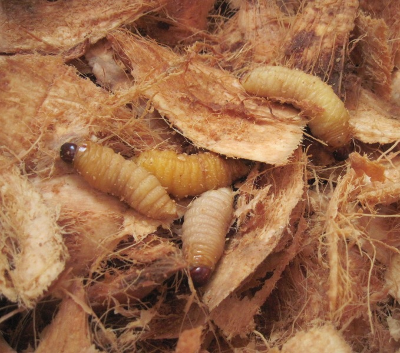

Đuông dừa món ăn đặc sản của người Bến Tre
Thứ hai, 13/3/2020, 15:30 (GMT+7)
Đuông dừa ở Bến Tre là một trong những món ăn dân dã và rất giàu chất dinh dưỡng ở ngày xưa và cho đến tận bây giờ. Người ta có thể tìm những con đuông dừa này tại trong các cây dừa. Cứ vào mùa sinh sản, đuông thường chọn những cây dừa sung sức để khoét ngọn vào sinh trứng. Trứng nở ra ấu trùng, sau đó phát triển và ăn củ hủ dừa để sinh tồn. Ngày nay, đuông dừa ngày nay đã trở thành một trong những món ăn quý nhất của dân sành ẩm thực.

Những con đuông béo tròn này dưới bàn tay khéo léo của người Bến tre, cho ra những món ăn ngon tuyệt vời mà ai cũng muốn một lần được thưởng thức. Sánh ngang với các món ăn từ côn trùng khác như cào cào, bọ cạp, kiến, bọ xít, nhện, cà cuống, côn trùng cánh cứng… cuông cũng khiến bạn trầm trồ bởi vị ngon bùi đặc trưng của nó. Đuông nướng dừa hoặc nướng than hoa là những món ăn được người dân địa phương yêu thích nhất.
Ngoài ra, đương ăn sống sẽ giữ nguyên được những chất dinh dưỡng trong nó. Để dễ ăn hơn, người ta có thể tẩm đuông với bột rồi chiên giòn lên ăn cũng rất béo ngậy và dễ ăn hơn, có thể ăn kèm với rau thơm, ớt cũng rất đạm đà.
Giới Thiệu

Thành phố Bến Tre là một điểm đến hấp dẫn
Follow Me

Liên hệ
Điện thoại: 0987654321
Email: web1013@dinhnt.com